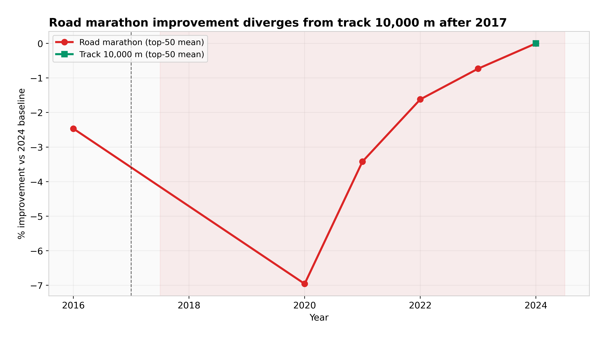
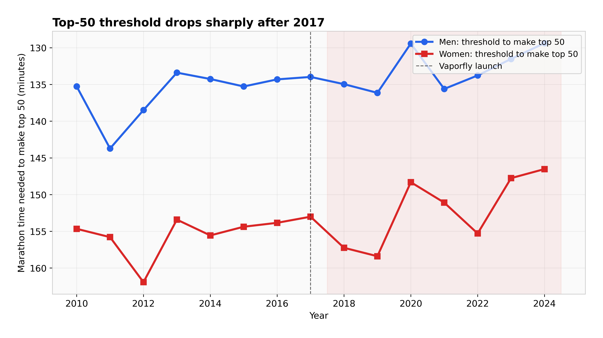

Super shoes, measured three ways
Nike’s Vaporfly 4% went on sale in 2017, and elite marathon times fell quickly after it. Pacing, prize money and deeper fields changed over the same years, so the question is how much of the drop belongs to the shoe. Three decomposition methods, run over 1,908 elite performances from 2010 to 2024, put it at 67 seconds (95% CI 36–99) of median elite marathon time. That is about 0.9% of a 2:05 marathon, well below the 3–5% the running press tends to imply.
Pooled shoe contribution to median elite marathon time, 95% CI 36–99 seconds.
Range of the three individual estimates: within-athlete 47, cohort survival 58, difference-in-differences 111.
Rise in sub-2:10 (men) and sub-2:25 (women) performances per year after 2017, against the three to five times often quoted.
Women’s road marathon improvement against women’s track 10,000 m over the same eras.
Start · the problem
A plain before-and-after comparison gives the shoe credit for everything that moved over those fifteen years: pacing, course choice, prize money, training and the depth of East African fields. The study compares the pre-Vaporfly era (2010–2016) with the post-Vaporfly era (2018–2024) and leaves out 2017 as a transition year. Each framework holds a different thing constant:
Km 10 · the answer
Pooled across the three frameworks. 95% CI 36–99 seconds.
At 2:05 pace (5.63 m/s), 67 seconds is about 379 metres of road: a runner in 2018 shoes would finish that far ahead of the same runner in 2016 shoes. The shaded band is the 95% interval, 202 to 556 metres.
The frameworks bracket the answer. Within-athlete pairing is the lowest at 47 seconds, with an interval that crosses zero. Difference-in-differences is the highest at 111 seconds, built on one year of women’s track results as the pre-era control. Cohort survival sits between them at 58 seconds.
The pooled value weights each estimate by the inverse square of its interval width, so cohort survival, with the tightest interval, carries about 69% of the weight. The pooled interval comes from the spread of the three estimates (the estimate ± 1.96 times their standard deviation over √3), with no bootstrap at this step. The cohort figure depends on an assumption the analysis makes, that 55% of the cohort shift is the shoe. The slider changes it.
Each framework's estimate and 95% interval in seconds of shoe-attributable improvement,
re-pooled with the formula in synthesize() as the cohort share moves.
Estimates and intervals from outputs/analysis_summary.json. The cohort interval
scales with the share, as in the script (raw_ci_low and raw_ci_high times the share).
One oddity is in the script, not the chart: the difference-in-differences interval, 131 to 253 s, lies entirely above its own point estimate. The point estimate averages top-30 medians per year, while each bootstrap draw takes the median of every resampled row in the era, so the two measure different things. The page reports both as the script produces them.
Km 21 · the control
Women’s road marathon top-30 median time fell 139 seconds (1.59%) between the eras. Women’s track 10,000 m fell 0.32%. Rescaled to marathon time, the track change accounts for 28 of the 139 seconds, which leaves 111 for road-specific causes. A placebo split inside the pre-era (2010–2013 against 2014–2016) gives 32 seconds.

Change in each runner's mean elite marathon time, post-era minus pre-era. Left of the line is faster. Hover, tap, or focus the chart and use the arrow keys.
From data/athlete_career_arcs.csv, with Arielle Rausin removed as the script does. Raw times, no age adjustment.
The paired t-test gives p = 0.26, so the direction is suggestive and the size is not settled. One row should not be there: Shelly Woods’ pre-era mean is 2:11:04, faster than the women’s world record of the time (2:15:25), so these are wheelchair-race times. The script’s name filter removes Arielle Rausin for that reason and misses Woods. The numbers above include her, as the published estimate does.
Km 30 · the timeline
The changepoint search puts the break in the sub-2:10 and sub-2:25 counts at 2020, three years after the Vaporfly went on sale. The repo’s hand-compiled shoe timeline shows why that lag is plausible: Nike had the field to itself until 2020, when three other brands released carbon-plated racers within four months.
Release and record dates from data/shoe_timeline.csv. Bold rows are world records.
Performances under the threshold per year in the dataset, with each era's mean as a line. 2020 is the pandemic year. Hover, tap, or focus the chart and use the arrow keys.
Counted from data/elite_marathon_times.csv with the thresholds in framework3_cohort_survival()
(under 7,800 s for men, 8,700 s for women); the era means match analysis_summary.json.
More fast times followed, though fewer than the popular figure. Sub-2:10 men went from 23 a year to 29 (1.25×) and women under 2:25 from 20 to 28 (1.39×). The three-to-five-times figure covers a wider set of races, and at the majors the count is capped by the size of the lead packs. Most of the post-era rise comes late: 2024 alone has 53 men under 2:10.

Km 35 · limitations
The track control has 27 rows, and its pre-era side is one year (2016) of women’s results. Men have no pre-era track data at all. That is the input to the highest estimate, so the 111 seconds is best read as an upper bracket.
The race tables have no ages, so the within-athlete change is not age-adjusted. The paired runners were typically four to six years older after 2017, which pushes that estimate toward zero. No race records which shoe anyone wore; era stands in for shoe use.
The 55% shoe share is an assumption. At 40% the cohort estimate is 42 s and the pooled value 51 s; at 70%, 74 s and 80 s. The script has no switch for this, so those values come from re-pooling the summary file with the script’s formula, which is what the slider above does. An earlier version of this write-up quoted 64 and 73 s.
The sensitivity runs cover only the difference-in-differences: 100 s with the top 25 per year instead of the top 50, and 111 s with Kipchoge or time-trial events removed. The bootstrap interval does not change across them.
Finish · how it was built
python src/analysis.py regenerates the 8 figures and the JSON summary in under a minute; a re-run in October 2026 matched the committed outputs exactly